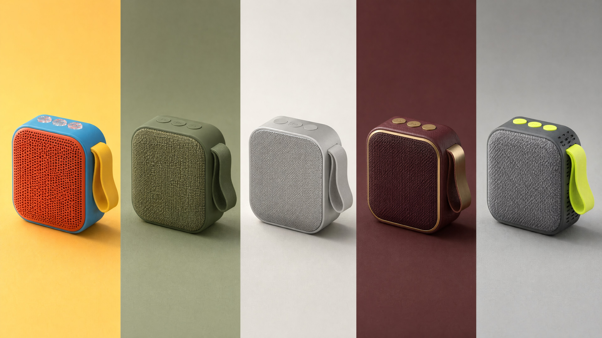
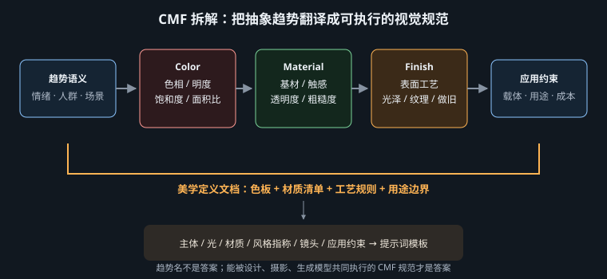

不追逐一份会过期的年度清单，而是把趋势翻译成可执行、可验证、可迁移的视觉规格

趋势会过期。某个年度流行的颜色、轮廓与叙事，可能在产品真正上市时已经变成陈词滥调。因此，本章不把“五大主题”包装成永久答案，而把它们当作五组练习样本。真正需要保留的是研究方法：CMF = Color / Material / Finish，即颜色、材料与表面处理。趋势研究的任务，不是发明一个动听的概念名，而是把“年轻”“自然”“克制”“奢华”“动感”等抽象判断，转换为能交给视觉设计、产品设计、供应链和生成模型共同执行的规格。
Color 不只写“蓝色”，而要给主色、辅色、强调色的 HEX 与面积关系；Material 不只写“高级材质”，而要说明塑料、亚克力、亚麻、原木或金属以及它们的光学属性；Finish 则规定哑光、镜面、拉丝、压纹、喷砂、包边等加工结果。三者互相制约：同一个 #FF4FA3 落在半透明亚克力上会产生透射与叠色，落在软橡胶上则变成低反射、可触摸的体块。模型若只收到颜色名而没有材料与处理，往往会用训练集里最常见的表面替你补全，导致概念正确、质感错误。

| 研究层 | 要记录的证据 | 写入提示词的形式 | 验证问题 |
|---|---|---|---|
| Color | 色相簇、明度、饱和度、面积比例 | HEX + 主辅关系 + 色块位置 | 转为灰度后，视觉层级是否仍成立？ |
| Material | 基材、透明度、柔硬、纹理尺度 | 具体材料 + 可见物理特征 | 近景能否辨认它是什么，而非泛化成“光滑物体”？ |
| Finish | 粗糙度、反射、接缝、加工痕迹 | matte、brushed、embossed 等工艺描述 | 高光形状是否符合处理方式？ |
| Application | 媒介、受众、成本、安全与版式 | 镜头、构图、留白、禁用项 | 图是否能直接进入海报、包装或产品评审？ |
“松弛感”“新奢华”“未来运动”只负责团队沟通，不负责生成。若无法继续写出色值、材料、表面、形态和用途约束，它就仍是情绪标签。也不要把五个主题混在一条提示词中：高饱和玩具塑料与粗粝原木、镜面黄铜与无装饰极简同时争夺注意力，模型只能做平均化拼贴。
| 主题 | HEX 色板 | 材料 | Finish / 形态机制 |
|---|---|---|---|
| 年轻趣味 | #FF4FA3 / #6C4BFF / #00D9FF / #FFE14A | 塑料、透明亚克力、软橡胶 | 高饱和撞色、圆角、半透明叠色、Y2K / 千禧复兴 |
| 自然之境 | #C8B89A / #7C8060 / #8B5E3C / #D9D2C3 | 本色亚麻、原木、石材、再生材料 | 粗粝原生表面、可见纤维与毛边、低加工痕迹 |
| 自在简行 | #E7E3DC / #B7B2A8 / #777873 / #2F3331 | 哑光陶瓷、磨砂铝、细织棉 | 低饱和中性色、极简形体、大留白、隐藏连接 |
| 奢华经典 | #161923 / #3A1324 / #B58A3A / #E8D7B8 | 天鹅绒、大理石、黄铜、皮革 | 镜面与哑光对照、对称、轴线、仪式性陈列 |
| 动感休闲 | #121820 / #D7FF2F / #FF5A36 / #AAB7C4 | 功能网布、尼龙、反光带 | 运动拼色、热压接缝、模块化口袋、athleisure / techwear |
高饱和撞色依靠的是色相距离与面积控制：粉与紫建立主体，青色做约 15% 的次强调，黄色只做约 5% 的视觉火花。圆角削弱硬物的威胁感，透明亚克力制造 Y2K 式数码乐观，软橡胶则把“未来”拉回可触摸的日常。若四种颜色等面积铺满，视觉焦点会消失；若把 Y2K 误写成大量镀铬与噪点，又会滑向怀旧海报而非产品 CMF。
a compact wireless speaker with oversized rounded buttons, floating above a modular display plinth, three-quarter studio view on a clean pale-gray set, large softbox from upper left, crisp cyan rim light, 5600K, #FF4FA3 molded plastic body, #6C4BFF soft-rubber controls, transparent #00D9FF acrylic fins, tiny #FFE14A accents, playful Y2K millennium-revival product language, injection-molded shells with glossy translucent inserts, 50mm lens, f/8, eye-level product photography, landscape launch key visual, speaker fully visible, uncluttered right-side copy space, no text, no logos
模型：MJ v8.1 · 参数：--ar 16:9 --stylize 140 --chaos 6 · 无负面词。前两行锁定商品与摄影棚；光照让塑料、橡胶、亚克力出现不同高光；中段把每个 HEX 绑定到一种材料，避免随机染色；最后的右侧留白、无字与无标志属于广告应用层。
自然主题的可信度来自低加工证据：亚麻纤维、木材导管、石材颗粒和再生纸斑点都应可见，但不能同时被做成破损、发霉与复古滤镜。可持续叙事也不能只靠绿色；更有效的是展示可替换包装、单一材料结构与少胶连接。土色之间明度接近，因此需要侧光掠过表面，以微阴影把粗糙度读出来。
a refillable botanical soap bottle beside its folded fiber-paper refill pouch, arranged on a raw stone slab, quiet daylight studio with an unbleached linen backdrop and a small unfinished oak block, grazing window light from camera right, broad soft fill, 5000K, #C8B89A linen fibers, #7C8060 recycled paper, #8B5E3C raw oak grain, #D9D2C3 honed limestone, earth-centered sustainable design, honest material expression, rough primitive surfaces without distressing, 70mm lens, f/11, slightly elevated still-life view, vertical packaging campaign, clear refill system, upper third reserved for copy, no leaves used as decoration, no text
模型：FLUX.2 · 参数：1536 × 2048，guidance 3.5，steps 30，seed 2202。提示词没有把“环保”当装饰，而用补充装系统与真实材料承担叙事；掠射光负责显示纤维和石纹；without distressing 限制模型把原生表面误解成做旧。
极简不是空无，而是减至必要。必要包括可辨认的使用关系、稳定比例和一处层级差异。低饱和中性色降低色彩竞争，哑光表面扩散高光，留白让眼睛测量形体间距；但若删掉握持点、开合线和尺度参照，产品会变成没有用途的白色几何体。应用到电商首图时，还要保留轮廓边缘与背景之间至少一档明度差。
a matte ceramic desk lamp with one slender pivoting arm, switched on beside a closed notebook, minimal warm-gray interior, only a low shelf line in the background, soft north-facing window light plus a restrained 4200K lamp glow, low contrast, #E7E3DC matte ceramic shade, #B7B2A8 fine-woven cotton cable, #777873 bead-blasted aluminum hinge, #2F3331 switch detail, quiet reductive industrial design, essential forms, precise proportions, generous negative space, 65mm lens, f/8, eye-level three-quarter view, square e-commerce hero image, product occupies 55% of frame, functional hinge visible, no props beyond notebook, no text
模型：Seedream 5 · 参数：2048 × 2048，guidance 4.0，seed 2203。one slender pivoting arm 与“转轴可见”保住功能逻辑；55% 占幅把留白变成可测版式，而不是含糊的“minimal”；4200K 的局部暖光仅说明灯具工作，不破坏中性色系统。
奢华感并不等于增加金色面积。深色背景吸收杂散光，黄铜边缘形成高亮线，天鹅绒吸光、大理石产生柔和反射、皮革留下细密纹理；高光泽与哑光的并置才让材料显贵。对称与轴线带来仪式秩序，但完全镜像容易僵硬，可用一只开启的盒盖制造轻微破格。若金属超过约 20%，画面容易从克制陈列滑向婚庆装饰。
an open burgundy leather watch case presenting a single mechanical watch, centered on a dark marble console, a symmetrical private salon with deep shadow and restrained architectural moldings, narrow warm key light from above at 3200K, controlled specular highlights, soft frontal fill, #3A1324 velvet lining, #161923 polished marble, brushed #B58A3A brass trim, #E8D7B8 stitching, classic luxury display, ceremonial axial composition, glossy stone contrasted with light-absorbing velvet, 85mm lens, f/5.6, straight-on eye-level view, horizontal brand key visual, exact center axis, lower-left copy space, one watch only, no text, no excessive gold ornament
模型：Nano Banana Pro · 参数：2048 × 1365，16:9 横向构图，单张输出。暖色窄光只打亮黄铜与表盘边缘，正面补光保留皮革；“一只腕表”与“不过量金饰”是品类和品牌约束；对称构图服务于仪式感，而非单纯复古。
athleisure 把运动服的舒适性带入日常，techwear 则强调防护、收纳与模块化。两者都不能靠随意增加绑带来冒充功能：网布应位于散热区，反光带应落在运动时可见的外侧，尼龙覆片应保护磨损区域。荧光黄与橙色负责方向和速度感，深底色维持城市适配；斜向拼色比平均条纹更容易产生运动矢量。
an urban cyclist fastening the chest buckle of a lightweight commuter jacket, one foot beside a matte-black bicycle, covered concrete transit concourse at dawn, hard directional side light at 6000K with a cool ambient fill, reflective strips catching the beam, #121820 ripstop nylon shell, breathable mesh underarm panels, #D7FF2F diagonal sports color blocking, #FF5A36 pull tabs, #AAB7C4 reflective tape, athleisure fused with functional techwear, heat-bonded seams, articulated elbows, modular pocket system, 35mm lens, f/4, low waist-height camera, slight diagonal composition, 4:5 apparel campaign, full jacket silhouette and functional zones visible, clean top copy space, no text, no decorative straps
模型：MJ v8.1 · 参数：--ar 4:5 --stylize 90 --chaos 4 · 无负面词。动作展示胸扣而不是摆拍，侧光使反光带产生可验证的回射亮点；35mm 低机位与斜构图强化速度，但 f/4 仍保留服装结构；“无装饰绑带”阻止功能语言退化为视觉噪声。
同一 CMF 主题在不同载体上不能等量复制。社交媒体封面允许高饱和撞色占据大面积，耐用品外壳却要考虑三年后的审美疲劳；空间效果图可以展示大理石的连续纹理，量产包装则受油墨色域、专色数量与覆膜成本限制；服装广告能靠侧光突出反光带，但商品详情页必须增加中性正面光，让买家看清结构。趋势因此应分成识别层与耐用层：易替换的图形、陈列和配件承担强趋势，主体结构与长期材料保持克制。
| 应用 | 优先约束 | 建议的趋势浓度 | 生成后检查 |
|---|---|---|---|
| 品牌 KV / 社媒 | 首屏识别、文案安全区、缩略图可读 | 高：强调色与戏剧光可放大 | 缩到 320px 后主题是否仍清楚？ |
| 电商产品图 | 颜色准确、结构完整、背景合规 | 中：保留 CMF，降低场景叙事 | 材质高光是否误导真实表面？ |
| 产品概念评审 | 可制造性、接缝、材料分区 | 中低：趋势服从工艺与成本 | 每条分色线能否对应真实零件？ |
| 长期空间 / 耐用品 | 耐久、清洁、老化、跨季节 | 低：把趋势放在可替换层 | 去掉软装后核心设计是否仍成立？ |
删除主题名，只保留色值、材料、工艺、光线、形态和用途约束，再让同事阅读。如果对方仍能准确描述画面的气质，这份定义就是可执行的；如果删除“年轻趣味”后只剩“好看、潮流、有质感”，说明研究尚未完成。
[主体与动作]，[真实使用环境]， [光线方向 + 软硬 + 色温]， [主色 HEX 与面积] + [辅色 HEX 与位置] + [强调色 HEX]， [基材] + [可见物理特征] + [Finish / 加工痕迹]， [主题指称] + [形态语法] + [明确排除项]， [焦距 + 光圈 + 机位]， [交付媒介 + 画幅 + 主体占比 + 文案安全区 + 功能约束]
至此，全书回到第一章的三层模型：CMF 把审美层变成光与物质的规格，主题命名把它接入文化层，版式、制造和传播条件构成应用层。流行趋势不是三层之外的第四层，而是对三层变量在某个时期如何组合的观察。会过期的是组合，会留下的是定义、验证与迭代的方法。不要收藏一串答案；建立一套能不断重写答案的系统。
趋势研究最危险的捷径，是拿一张热门图当风格本身。单张图会把题材、品牌、摄影条件与后期混在一起；可靠方法是建立同类样本、反例样本、跨品类验证样本三组证据。同类样本用来找重复规律，反例用来确认边界，跨品类验证则判断这套规律能否离开原产品仍成立。视频还要抽取镜头节奏、运动频率和颜色转折，因为“静帧像”不代表动态语言相同。
| 逆向维度 | 记录证据，不写评价 | 翻译成规则 | 跨品类测试 |
|---|---|---|---|
| 颜色 | 主辅色面积、最高色度位置、镜间色彩转折 | 60/30/10、强调色绑定功能、Color Script 节点 | 把服装配色移到家电，层级是否仍清楚 |
| 材质 / Finish | 高光宽度、纹理尺度、接缝与边缘 | 粗糙度区间、加工方式、禁用表面 | 换形体后高光是否仍能辨认工艺 |
| 镜头 | 焦距分布、机位高度、静动比例、切点 | 允许的焦段与运动语法 | 换场景后是否仍有同样节奏而非同样构图 |
| 后期 | 黑位、高光滚降、颗粒、综合色偏 | 技术归一 + 创意 LUT 范围 | 中性测试卡是否保持可辨，肤色是否越界 |
把结论写进可更新的风格圣经：每条规则必须同时有机制、范围、正例和失败例，并注明样本日期与适用媒介。比如不要写“2026 流行柔雾感”，而写“以有来源的逆光和空气介质压低远景对比，高光滚降柔和；主体边缘仍清楚；禁止全局降清晰度”。这条规则能进入提示词、摄影方案和调色验收，也不会因某个标签退潮立刻失效。
[REFERENCE REVERSE-ENGINEERING TEST] a refillable travel speaker used at a quiet railway platform, unrelated to the references, apply only the extracted rules: upper-mid value range, matte mineral body, one translucent recycled-polymer control, 70/25/5 muted-to-accent ratio, soft side daylight with one narrow functional highlight, 50mm static opening shot, then a slow four-second lateral move; fixed exposure and white balance, shared black level and gentle highlight roll-off, no copied logos, motifs or composition
换一个主体就不像，说明提取的是物件与场景名，应删去内容词再找颜色、边缘和镜头规律；静帧成立、视频一动就散，说明风格圣经漏了运动与剪辑；所有样本都支持结论，通常是样本池偏置，应主动加入失败案例与不同价格带；LUT 一套就“像”但产品色失真，说明后期映射越权，应先做色彩空间归一，并把品牌色与肤色列为保护区。